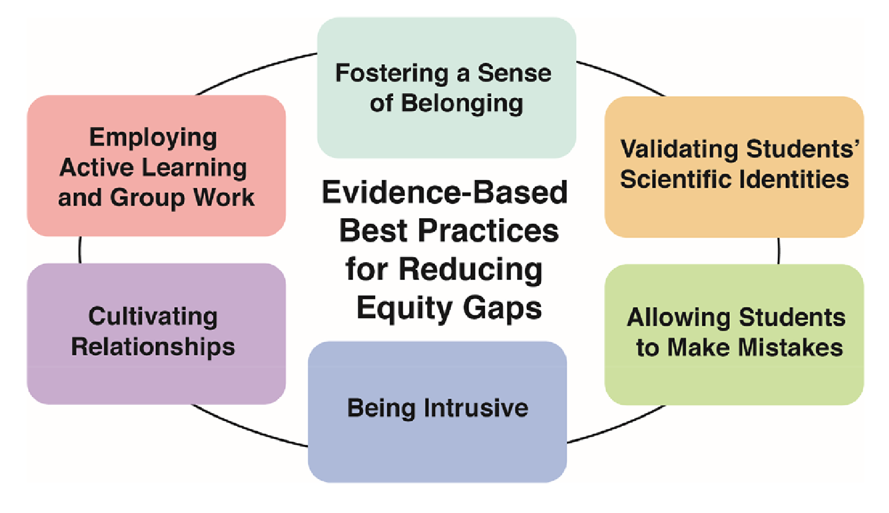

Equitable and Inclusive Practices Designed to Reduce Equity Gaps in Undergraduate Chemistry Courses
Equitable and Inclusive Practices Designed to Reduce Equity Gaps in Undergraduate Chemistry Courses
White, K. N., Vincent-Layton, K., & Villarreal, B. (2021). Equitable and Inclusive Practices Designed to Reduce Equity Gaps in Undergraduate Chemistry Courses. Journal of Chemical Education, 98(2), 330--339.
What it says
- The paper seeks to deliver an actionable review of a range of instructional practices that have been shown to improve equity and inclusion in the classroom. Although these practices are not uniquely applicable to chemistry, the authors do emphasize the particular need for greater equity of outcomes in chemistry and STEM more generally.

A graphical summary of the hallmarks of an inclusive classroom. (Figure 4 from White et al.).